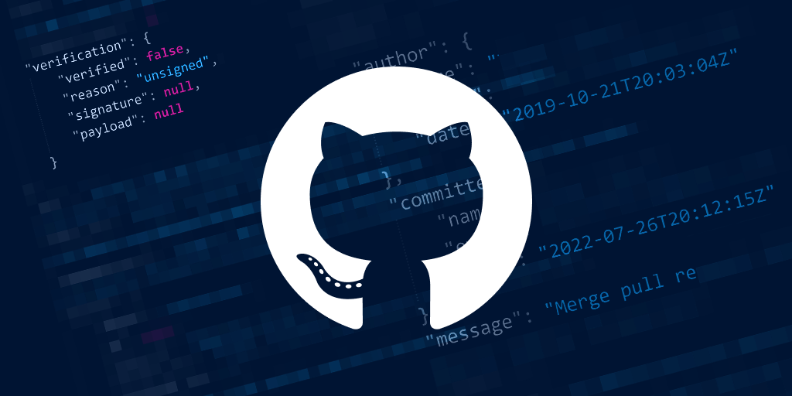

Siwani Veerakathy
I'm Front-end Developer
About
Ik ben een HBO-ICT student met een passie voor technologie en ontwikkeling. Mijn focus ligt op webdevelopment, maar ik verdiep me daarnaast ook graag in onderwerpen zoals AI, data-analyse en softwaretesting. Ik streef ernaar om praktische, gebruiksvriendelijke oplossingen te bouwen en mijn kennis voortdurend uit te breiden. In projecten werk ik gestructureerd, zelfstandig en met oog voor detail.
Front-end Developer & HBO-ICT Student met brede IT-interesses.
Ik ben een HBO-ICT student met een brede interesse in technologie. Naast webdevelopment verdiep ik me graag in data-analyse, AI-toepassingen en softwaretesting. Ik werk graag aan schaalbare, gebruiksvriendelijke oplossingen met oog voor detail in zowel design als code. Nieuwsgierigheid en leergierigheid drijven mij om mezelf voortdurend te blijven ontwikkelen in meerdere IT-richtingen.
- Phone: +31 6 81169792
- Degree: HBO Bachelor Informatica
- Email: siwaniv@protonmail.com
In mijn projecten werk ik graag met moderne technologieën zoals React, Angular, Tailwind CSS en Firebase. Daarnaast heb ik ervaring opgedaan met Python, Power BI, SQL en het opzetten van testomgevingen. Ik vind het belangrijk om me breed te ontwikkelen en bij te dragen aan innovatieve oplossingen die techniek en gebruikerservaring combineren.
Skills
Mijn vaardigheden verdeeld over front-end, back-end/data en ondersteunende tools.
Front-end Development
Back-end & Data
Tools & Overig
Resume
Overzicht van mijn opleiding, relevante projecten en professionele ervaring binnen webdevelopment, data-analyse en software testing.
Profiel
Siwani Veerakathy
HBO-ICT student met ervaring in front-end development, data-analyse en AI-projecten. Zelfstandig en leergierig, met oog voor gebruiksvriendelijkheid en codekwaliteit.
- Voorburg, Nederland
- +31 6 81169792
- siwaniv@protonmail.com
Opleiding
HBO Informatica
2023 - Heden
Hogeschool Leiden
Specialisatie in software development met extra interesse in AI, data-analyse en front-end technologieën. Werkzaam aan praktijkgerichte projecten en stages in het werkveld.
MBO - Software Developer
2020 - 2023
Mborijnland, Leiden
Gediplomeerd software developer met focus op programmeren, databases en webtechnologie. Basis gelegd in HTML, CSS, PHP en JavaScript met praktijkervaring in verschillende school- en stageprojecten.
Stage & Werkervaring
Front-end stagiair – Socylist
2024
Zoetermeer, Nederland
- Opgezet en getest met moderne tools zoals Vite, Vitest en Playwright
- Geautomatiseerde tests geschreven en bugs opgespoord
- Actief meegewerkt aan het verbeteren van de front-end structuur
Stagiair Webontwikkeling – Dutch Innovation Factory
2023
Zoetermeer, Nederland
- Front-end development met HTML, Tailwind CSS en Symfony
- Nieuwe componenten gebouwd en gestyled volgens UX-richtlijnen
- Gewerkt in Scrum-team met code reviews en teamoverleg
Zelfstandige projecten
2022 - Heden
- Webshop met Angular, Spring Boot en PostgreSQL
- Emotion Tracker met React en Firebase
- TEDx-dashboard met AI-model in Python + webinterface
- Restaurant Kreta website – HTML, CSS, JS
Portfolio
Een selectie van projecten die ik heb ontwikkeld tijdens mijn opleiding en in mijn eigen tijd. De focus ligt op front-end development, data-analyse en full-stack toepassingen.
- All
- Web
- Data/AI
Emotion Tracker

React-applicatie waarmee gebruikers hun emoties kunnen registreren.
Data-opslag en authenticatie via Firebase.
Webshop Platform
Full-stack webshop gebouwd in Angular (front-end) en Spring Boot (back-end), met PostgreSQL als database.
Bekijk op GitHubTEDx Dashboard
Python-dashboard met machine learning-modelen die TED-talks automatisch categoriseren op basis van inhoud.
Bekijk op GitHubRestaurant Kreta
Responsive informatieve website ontwikkeld voor een restaurant, gebouwd in HTML, CSS en JavaScript.
Live bekijkenContact
Heb je vragen of wil je samenwerken? Neem gerust contact met mij op via onderstaand formulier.
siwaniv@protonmail.com
Telefoon
+31 6 81169792